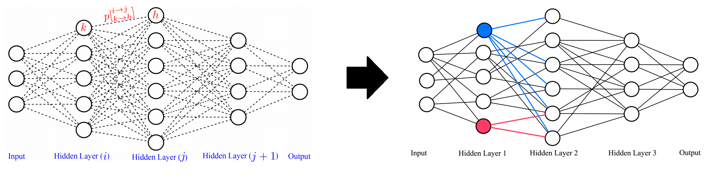

Efficient, optimized and specialized machine learning models play an important role in real-world applications especially in the new edge AI era. Real-world applications and especially in the edge AI field are mostly restricted by hardware characteristics including computational power, available memory, and energy consumption; these constraints make the use cases of deep neural networks limited for several industries since it is very laborious to have a robust model and at the same time fulfill all operational requirements. This research focuses on developing advanced and novel frameworks to design graph-based machine learning models such as deep neural networks and graphical models with efficient computation, utilized in different industries such as autonomous driving cars, surveillance, and consumer electronics. In this research project we aim to bridge the gap between human and AI and augment the capability of human users by AI functionality to better design effective and efficient machine learning models.

More...
The analysis and extraction of meaningful information from video data is a vital application of machine learning, particularly given the explosion of video being produced, uploaded, transmitted, and stored worldwide. Machine learning and, more recently, deep learning methods have shown outstanding success in identifying objects in still images, whether as face recognition, texture classification, or even the recognition of every-day objects in cluttered environments. However these methods typically do not generalize well to video, where our proposed research focuses on two challenges:
- Object locations, shape, and interactions are much more complex over time than within a single image. We wish to infer which objects are of greatest significance, and how multiple objects in a scene interact with one another over time -- for example whether a hat is on a person's head (interacting), or on a shelf in the background (non-interacting).
- The overwhelming majority of video data is not annotated in any way, so our goal is to push the state-of-the-art in machine learning given semi-supervised data (few annotations) or fully un-supervised data (no annotations).

More...
The phenomenon of adversarial examples poses a threat to the deployment of the deep neural networks (DNNs) in safety and security sensitive domains. A great progress has been made in this area and different approaches have offered some levels of certified robustness against adversarial examples. However, there are still two main problems remaining for having robust deep neural network models; first, the level of the robustness is not very effective yet, and the second problem is that the current robust training algorithms are computationally very expensive with very high training times. This specially makes them impractical for the real-world problems with large sizes of training data.
More...
Random fields have remained a topic of great interest for decades for the purpose of structured inference, especially for problems such as image segmentation. The local nodal interactions commonly used in such models often suffer the short-boundary bias problem, which are tackled primarily through the incorporation of long-range nodal interactions. However, the issue of computational tractability becomes a significant issue when incorporating such long-range nodal interactions, particularly when a large number of long-range nodal interactions (e.g., fully-connected random fields) are modeled. In this work, we introduce a new random field formation framework, called randomly-formed conditional random fields (RCRFs), which is aimed at tackling the issue of computational tractability when using fully-connected random fields. Grounded in random graph theory, a fully-connected random field is modeled as a random graph, and the sparse representation of the random field is formed stochastically as realizations of the random graph. The proposed RCRF allows for efficient structured inference using fully-connected random fields while preserving modeling accuracy as well as relaxes restrictions on the types of potential functions that can be utilized. Experimental results demonstrate that the proposed framework can provide competitive performance for the purpose of figure-ground segmentation when compared to existing fully-connected and principled deep random field frameworks while requiring only a modest run-time.

More...
Deep neural networks is a branch in machine learning that has seen a meteoric rise in popularity due to its powerful abilities to represent and model high-level abstractions in highly complex data. One area in deep neural networks that is ripe for exploration is neural connectivity formation. A pivotal study on the brain tissue of rats found that synaptic formation for specific functional connectivity in neocortical neural microcircuits can be surprisingly well modeled and predicted as a random formation. Motivated by this intriguing finding, we introduce the concept of StochasticNet, where deep neural networks are formed via stochastic connectivity between neurons. As a result, any type of deep neural networks can be formed as a StochasticNet by allowing the neuron connectivity to be stochastic. Stochastic synaptic formations, in a deep neural network architecture, can allow for efficient utilization of neurons for performing specific tasks.
More...